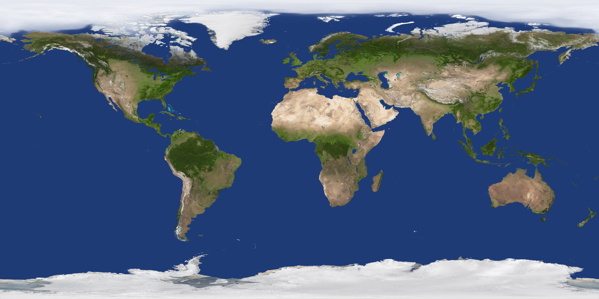

S行星 · 太阳 · 土星环
12 张全部为等距圆柱投影的球面贴图，直接贴在 SphereGeometry 上；尺寸越大越经得起近距离特写。
卫星
13 张卫星半径只有行星的 3%–6%，但特写时仍按真实比例铺满画面，因此统一做到 2048 宽。
星空全景
2 张银河全景同时用于场景天球（半径 19700）与开屏背景；4K 版随包发布，8K 原图仅本地保留。
深空天体（星云 / 星团 / 超新星遗迹）
12 张卡片展示尺寸 1280×720，源图来自 NASA 公开影像，按卡片比例居中裁切。
星座（真实银河裁切 + 星表连线）
13 张背景是从 4K 银河全景按真实赤经赤纬做球面透视裁切得到的真实天区，金色连线由本项目按星表绘制。